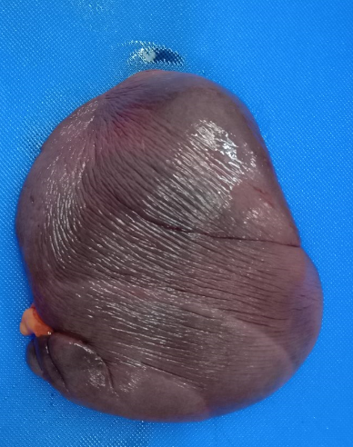
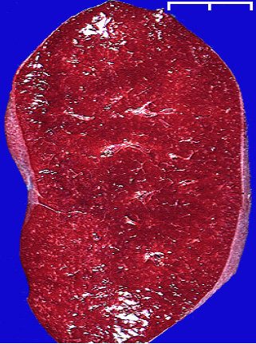
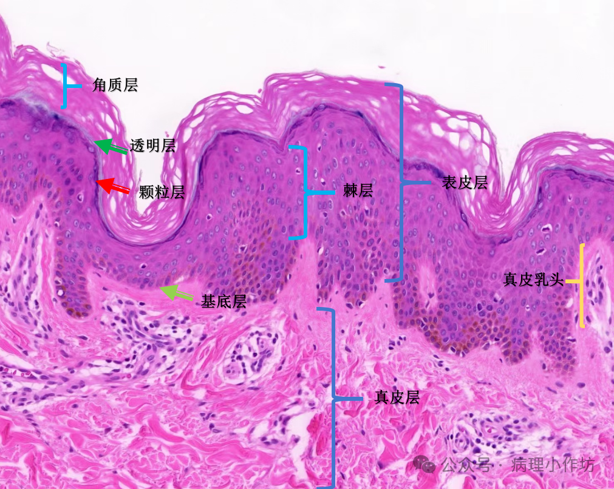

Every lesion in Part Three is read against a normal you must already know
cold: the spleen's own architecture, and the skin's own layers. Ten seconds spent confirming
"yes, this still looks like spleen" is what tells you a lesion is focal rather than
everywhere.هر ضایعه در بخش سوم در برابر یک طبیعی خوانده میشود که باید از قبل کاملاً بدانید: معماری خودِ طحال، و لایههای خودِ پوست. ده ثانیه صرف تأیید «بله، این هنوز شبیه طحال است» همان چیزی است که به شما میگوید ضایعه موضعی است نه فراگیر.
Normal spleenطحال طبیعی
Table · Spleen at a glanceجدول · طحال در یک نگاه
Feature
Value
Weightوزن
110 to 200 g۱۱۰ تا ۲۰۰ گرم
Siteمحل
Left abdominal cavity, under the diaphragmحفرهٔ شکمی چپ، زیر دیافراگم
Sizeاندازه
10 to 12 cm × 6 to 8 cm × 3 to 4 cm۱۰ تا ۱۲ سانتیمتر × ۶ تا ۸ سانتیمتر × ۳ تا ۴ سانتیمتر
Functionکارکرد
The largest lymphatic organ; immune response, and filtering aged red cellsبزرگترین اندام لنفاوی؛ پاسخ ایمنی، و پالایش گلبولهای قرمز فرسوده

Fig. 1 Normal spleen: smooth, intact capsule, uniform deep
red-purple colour, firm but not hard.طحال طبیعی: کپسول صاف و سالم، رنگ قرمز-بنفش تیرهٔ یکنواخت، سفت اما نه سخت.
The spleen is a parenchymal organ wrapped in a dense connective-tissue capsule. Trabeculae carry
trabecular arteries and veins inward from the capsule, branching into the pulp: white pulp
(lymphoid nodules around a central artery, the immune-response tissue) and red pulp (a dense
network of splenic sinuses, the filtering and blood-storage tissue).طحال اندامی پارانشیمی است که در کپسولی متراکم از بافت پیوندی پیچیده شده است. تیغهها شریانها و وریدهای تیغهای را از کپسول به درون حمل میکنند و به پالپ منشعب میشوند: پالپ سفید (گرههای لنفاوی دور یک شریان مرکزی، بافت پاسخ ایمنی) و پالپ قرمز (شبکهای متراکم از سینوسهای طحالی، بافت پالایش و ذخیرهٔ خون).
MICROFig. 2 Normal spleen, H&E.
Round lymphoid nodules (white pulp, arrowheads) surround central arterioles; a trabecular artery
runs through connective tissue (arrow) between them, with red pulp filling the rest of the
field.میکروطحال طبیعی، رنگآمیزی H&E. گرههای لنفاوی گرد (پالپ سفید، پیکانهای توخالی) آرتریولهای مرکزی را احاطه کردهاند؛ یک شریان تیغهای از میان بافت پیوندی میان آنها عبور میکند (پیکان توپر)، و پالپ قرمز باقی میدان را پر میکند.
Why this matters laterچرا این بعداً اهمیت دارد
Spleen anemic infarction (slide No.6, Part Three) is read by comparing an infarcted zone against
exactly this normal picture: the same white-pulp nodules, but compressed and atrophic, sitting
beside tissue that has lost its nuclei entirely.انفارکتوس آنمیک طحال (اسلاید شمارهٔ ۶، بخش سوم) با مقایسهٔ یک ناحیهٔ انفارکته با دقیقاً همین تصویر طبیعی خوانده میشود: همان گرههای پالپ سفید، اما فشرده و آتروفیک، در کنار بافتی که هستههایش را کاملاً از دست داده است.
Normal skinپوست طبیعی

Fig. 3 Normal skin: smooth, intact surface, uniform colour, even
thickness.پوست طبیعی: سطح صاف و سالم، رنگ یکنواخت، ضخامت یکسان.
Skin is built in three named layers, each with its own sublayers: the epidermis
(keratinized stratified squamous epithelium), the dermis (dense connective tissue carrying
vessels, nerves, and appendages), and the subcutaneous tissue (adipose and loose connective
tissue anchoring the skin to deeper structures). The appendages, hair follicles, sweat glands, and
sebaceous glands, all sit rooted in the dermis or subcutis but open onto the epidermal
surface.پوست از سه لایهٔ نامدار ساخته شده است، هرکدام با زیرلایههای خود: اپیدرم (اپیتلیوم سنگفرشی چندلایهٔ کراتینهشده)، درم (بافت پیوندی متراکم حامل عروق، اعصاب، و ضمائم)، و بافت زیرجلدی (بافت چربی و پیوندی سست که پوست را به ساختارهای عمقیتر متصل میکند). ضمائم، فولیکولهای مو، غدد عرق، و غدد سباسه، همگی در درم یا زیرجلد ریشه دارند اما روی سطح اپیدرم باز میشوند.
MICROFig. 4 Normal skin, H&E, low
power. Annotated on the original slide (translated here): red = blood vessel; orange arrow = dermis;
brown arrow = subcutaneous tissue; black = sweat gland; yellow = sebaceous gland; blue = hair
follicle.میکروپوست طبیعی، H&E، بزرگنمایی کم. روی اسلاید اصلی حاشیهنویسی شده (اینجا ترجمهشده): قرمز = عروق خونی؛ پیکان نارنجی = درم؛ پیکان قهوهای = بافت زیرجلدی؛ سیاه = غدهٔ عرق؛ زرد = غدهٔ سباسه؛ آبی = فولیکول مو.

MICROFig. 5 Epidermis, H&E, high
power. Translated from the original: stratum corneum (outermost, anucleate keratin), stratum
lucidum (thin, present in thick skin), stratum granulosum (keratohyalin granules), stratum spinosum
("prickle cell" layer), stratum basale (single proliferative layer), sitting on the dermal
papillae.میکرواپیدرم، H&E، بزرگنمایی زیاد. ترجمهشده از اسلاید اصلی: استراتوم کورنئوم (بیرونیترین، کراتین بدون هسته)، استراتوم لوسیدوم (نازک، در پوست ضخیم حاضر)، استراتوم گرانولوزوم (گرانولهای کراتوهیالین)، استراتوم اسپینوزوم (لایهٔ سلولهای خاردار)، استراتوم بازاله (لایهٔ تکثیری منفرد)، نشسته روی پاپیلاهای درمی.
Table · The epidermis, outside inجدول · اپیدرم، از بیرون به درون
Layer
Feature
Stratum corneumاستراتوم کورنئوم
Anucleate, keratinized dead cells; the barrier layerسلولهای مرده کراتینه و بدون هسته؛ لایهٔ سدی
Stratum lucidumاستراتوم لوسیدوم
Thin, translucent; present only in thick (palm/sole) skinنازک، شفاف؛ فقط در پوست ضخیم (کف دست/پا) حاضر
Stratum granulosumاستراتوم گرانولوزوم
Keratohyalin granules mark the start of keratinizationگرانولهای کراتوهیالین آغاز کراتینهشدن را نشان میدهند
Stratum spinosumاستراتوم اسپینوزوم
Desmosome-rich "prickle cells," several layers thickسلولهای خاردار غنی از دسموزوم، چند لایه ضخیم
Stratum basaleاستراتوم بازاله
Single layer of proliferating cells on the basement membraneلایهٔ منفرد سلولهای در حال تکثیر روی غشای پایه
Why this matters laterچرا این بعداً اهمیت دارد
Granulation tissue (slide No.20, Part Three) forms exactly where this normal layering has been
breached: the epidermis is gone at the ulcer floor, and what you see instead is new capillaries and
fibroblasts filling the gap the dermis and epidermis used to occupy.بافت گرانولاسیون (اسلاید شمارهٔ ۲۰، بخش سوم) دقیقاً همانجایی شکل میگیرد که این لایهبندی طبیعی شکسته شده است: اپیدرم در کف زخم از بین رفته، و آنچه بهجای آن میبینید مویرگهای جدید و فیبروبلاستهایی است که شکاف باقیمانده از درم و اپیدرم را پر میکنند.